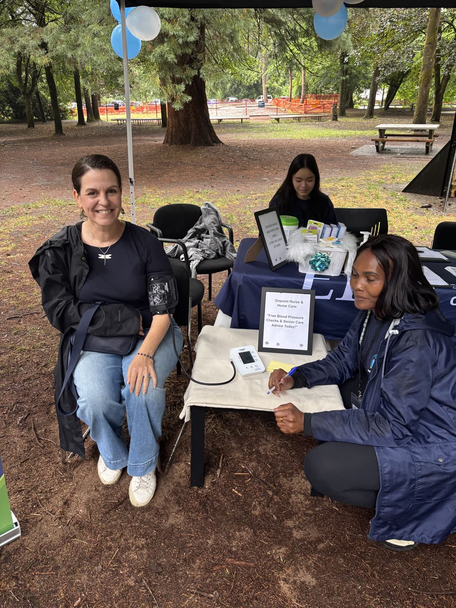

The Privilege of Caring for Metro Vancouver Families
Inviting a caregiver into your home or your parent's home is an act of deep trust. Every testimonial we receive represents hours of dedicated companionship, careful medication oversight, gentle morning routines, and quiet overnight safety that allows adult children to sleep peacefully.
We are deeply grateful to the families across Vancouver, Richmond, Burnaby, and Surrey who share their experiences and trust our registered nursing team to care for those they love most.
"Our caregivers are not just shift workers; they become an essential pillar of safety, companionship, and comfort in our clients' daily lives."

What Families Say About Our Care
Every family's care journey is unique. Here is how our team has helped local elders thrive in their own homes.
"A Lifesaver After Hospital Discharge"
"When my mom was discharged from Vancouver General Hospital with a surgical drain and new medications, our family was completely overwhelmed. Risper met us at the hospital, walked us through the recovery plan, and sent an exceptional nurse that very evening. My mom recovered with zero complications."
"Exceptional Patience with Dementia"
"My father's vascular dementia made him very suspicious of outside help. The OnPoint team was incredibly gentle, taking the time to learn about his love for jazz music and gardening before stepping in with personal care. He now looks forward to his caregiver's morning visits."
"Peace of Mind While Working Full-Time"
"Being an only child caring for an aging mother with severe mobility issues was burning me out. Having OnPoint provide overnight care 4 nights a week saved my health and my job. Knowing someone is actively watching over her safety through the night is priceless."
"Clinical Excellence & True Dignity"
"My husband required daily wound dressing and diabetes monitoring. The registered nurses from OnPoint were consistently punctual, impeccably clean, and treated him with profound respect and dignity. Highly recommended to anyone needing private nursing."
"Seamless 24-Hour Care Coordination"
"When my 93-year-old grandmother insisted on staying in her home of 50 years rather than moving into a facility, OnPoint arranged a 24-hour care schedule with three wonderful caregivers. The digital shift notes keep our entire family connected."
"Compassionate Palliative Support"
"During my mother's final weeks, OnPoint provided around-the-clock comfort nursing. Their gentle presence and calm guidance helped us focus on being a loving family rather than stressed medical managers. We will forever be grateful."
Are You a Current or Past Client?
Your feedback helps other families navigate difficult care decisions. We invite you to share your experience with our care team on Google.
Questions & Answers
Yes. All testimonials and case studies reflect genuine care engagements across Vancouver, Richmond, Burnaby, and Surrey, with client names modified only where requested to preserve medical privacy.
We always obtain explicit written consent before featuring client feedback and anonymize sensitive medical details.
Yes. Family members can reach out directly to Risper Murunga via phone or our private family portal anytime.
We provide an immediate, zero-hassle rematch guarantee with full clinical handover so there is no gap in care.
You can leave a public review on our Google Business Profile or submit confidential feedback directly to our clinical leadership via our contact form.
Our Lead Registered Nurse conducts structured satisfaction check-ins at 30, 60, and 90 days, proactively addressing any preferences or routine adjustments.
Families consistently praise our clinical nurse responsiveness, zero stranger rotation, and the genuine compassion and reliability of our dedicated caregivers.
Upon request and with mutual client consent, we can connect prospective families with client references who have experienced our nurse-led care.
Start Your Family's Care Journey Today
Join dozens of Metro Vancouver families who experience peace of mind with our nurse-led care model.